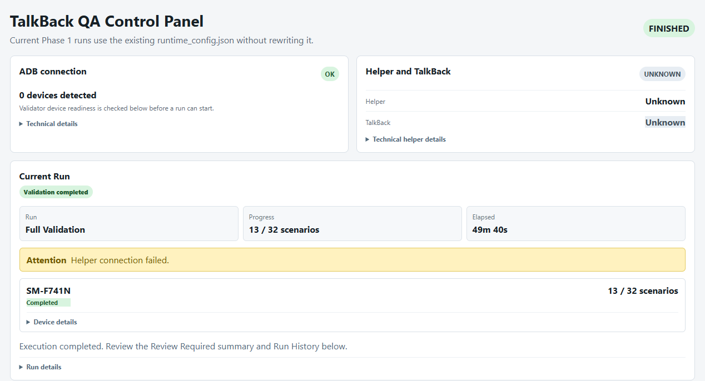

Android Helper
TalkBack과 직접 상호작용하는 Android 보조 APK입니다. AccessibilityService를 기반으로 ADB 명령을 받아 접근성 트리 수집, 포커스 이동, 대상 동작, SMART_NEXT와 증거 이벤트를 연결합니다.
보고서 01 · 배경
접근성 검증은 화면을 한 번 보는 것으로 끝나지 않습니다. TalkBack 포커스 순서, 발화, 동적 콘텐츠와 복구까지 확인하고 재현 가능한 증거로 남겨야 합니다.

시스템 구성
TalkBack과 직접 상호작용하는 Android 보조 APK입니다. AccessibilityService를 기반으로 ADB 명령을 받아 접근성 트리 수집, 포커스 이동, 대상 동작, SMART_NEXT와 증거 이벤트를 연결합니다.
검증 시나리오의 실행과 TalkBack 순회를 제어하는 실행 엔진입니다. 화면 진입, 복구, 중지 규칙과 실제 포커스 기반 결과 저장을 담당합니다.
검증 실행부터 결과 검토까지 한 화면에서 관리하는 사용자 인터페이스입니다. 단말·TalkBack 사전 점검, 실행 방식, 시나리오 선택, Batch 모니터, Review Required, Candidate/Comparator를 제공합니다.
이 시스템의 목적은 단순히 “자동으로 클릭한다”가 아닙니다. 화면에 도달한 뒤 실제 TalkBack이 방문한 포커스와 발화·화면 증거를 수집하고, 사람이 판단할 수 있는 형태로 만드는 것입니다.